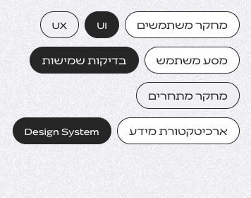
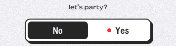

המחקר נותן בסיס להחלטות, האינטראקציה מזמינה להשתתף, והפיתוח הופך את הרעיון למוצר שאפשר להשתמש בו.
מחקר והצעה להצגה בעמוד הבית · 10.10.2026
עדכון אחרון — הדגמת המשימות הקודמת נדחתה. הבעלים בחרה באפשרות 3, ״מרכיבים משהו משלכם״. פתיחת תצוגת הניסיון העדכנית · התנהגות, אימות וסטטוס. גם תצוגת ההרכבה נדחתה בהמשך; שתי ההדגמות נשמרות כתיעוד בלבד ואין לשלב את תצוגת ההרכבה בעמוד הבית; הלוח להלן נשמר כתיעוד המחקר הקודם.
איפיון ועיצוב מבוססי מחקר
כל כפתור, כל אנימציה וכל בחירה היא מושכלת. אני מתעדכנת כל הזמן במחקרים ומתודולוגיות חדשות.

קיים באתר · תצלום עדכני במצב תנועה מופחתת
המושגים הופכים לחומר שאפשר לראות ולגעת בו. שומרים על הגלולות וההתנהגות הקיימת באתר.
חוויה אינטראקטיבית ואטרקטיבית
פחות טקסט, יותר ויז׳ואל ומעורבות של המשתמשים.

קיים באתר · תצלום של מתג Party Mode
המבקר בוחר לשנות את החוויה בעצמו. שומרים על Party Mode ועל מיקום הטקסט במרכז.
פיתוח ללא גבולות
אני הופכת את האפיון והעיצוב למוצר דיגיטלי עובד, עם פתרונות שמותאמים לצרכים שלכם. עד לפרטים הקטנים.
סקיצהממשק לדוגמה
המשימות שלי
השלב הבא: להפוך את הסקיצה למוצר
הצעה חדשה · סקיצה שהופכת לממשק חי
לוחצים, והאפיון מתעורר: הממשק מקבל עיצוב, המשימות נעשות פעילות ומונה ההשלמה מגיב לסימון שלהן.
״ללא גבולות״ מקבל משמעות שאפשר להפעיל.
ההצעה מדגישה את המסר שבחרנו: מרעיון למוצר עובד. היא משלימה את הגלולות ואת המסיבה בפעולה מסוג אחר — בנייה ושימוש. ההדגמה מתחילה רק בלחיצה, בלי לולאת אנימציה שמתחרה בשני השירותים האחרים.
מה לקחנו מהמחקר
שלושה רפרנסים נבחרו מתוך תשע תוצאות שנבדקו ב־Mobbin. אלה רפרנסים לקומפוזיציה ולהמחשת יכולת; המעבר מסקיצה לממשק הוא הצעה מקורית ללוח הזה.
מה רואים: הסבר על רכיבי תוכן מותאמים לצד קומפוזיציית ממשק פשוטה.
מה לוקחים: המחשת גמישות דרך רכיבי ממשק מוכרים. ההצעה שלנו נשארת מובנת גם למי שלא קורא קוד.
שיטת המחקר, מקורות וגבולות
בוצעו שלושה חיפושי סקשנים ב־Mobbin: סביבת עריכה ותוצר; בניית אפליקציות מותאמות; והצגת שלושה שירותים עם ויזואל לכל שירות. התקבלו תשע תוצאות וכל התצוגות המקדימות נבדקו חזותית. שלוש התמונות שנבחרו נשמרו מהמקור ברזולוציה מלאה.
המקורות הם סקשנים של מוצרי תוכנה, ולא הוכחה למבנה עמוד הבית הנוכחי שלהם. תאריך המחקר אינו תאריך הצילום. מצילום סטטי אי אפשר לקבוע התנהגות, אנימציה, נגישות, התאמה למובייל או השפעה על המרות.
שני השירותים הראשונים מוצגים באמצעות תצלומים עדכניים מהאתר המקומי, במצב תנועה מופחתת. המתג המוצג הוא צילום; הדגמת הפיתוח היא האינטראקציה הפעילה בלוח. רשימת המשימות היא תוכן להמחשה ואינה פרויקט לקוח.
הלוח הוא מחקר והצעה. הוא אינו משנה את עמוד הבית, את השירותים או את ההתנהגויות הקיימות באתר.